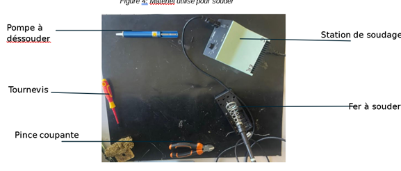

🚁 Portfolio SAE – Conception et Réalisation d’un Moteur de Drone
👋 Introduction
Cette SAÉ avait pour but de concevoir, bobiner, modéliser et tester un moteur de drone fonctionnant avec un stator bobiné et un rotor aimanté, tout en respectant une logique de fabrication artisanale et de validation expérimentale.
Projet réalisé en binôme avec Clément Durand, encadré par M. Talierco.
🎯 Objectifs pédagogiques
| Compétence | Description | Apprentissage Critique |
|---|---|---|
| C1a | Produire une analyse fonctionnelle | Identifier les écarts fabrication/théorie |
| C1b | Réaliser un prototype | Bobinage, modélisation SolidWorks |
| C1c | Documenter la fabrication | Estimations, relevés, modèles 3D |
| C2a | Tester le fonctionnement | Test résistance, inductance, équilibrage |
| C2b | Valider les performances | Vérification fréquence de coupure, phase |
| C2c | Corriger un défaut | Résolution de problème sur brasage & déphasage |
📚 Matières mobilisées
| Matière | Apport dans le projet |
|---|---|
| Électronique | Bobinage, mesure résistance, inductance |
| CAO | Modélisation 3D des pièces avec SolidWorks |
| Électricité | Mesures sur oscilloscope, filtres RL |
| Physique appliquée | Fréquence de coupure, modélisation |
| Méthodologie projet | Planification, documentation, résolution de problèmes |
| Informatique / Simulation | Simulation PWM avec PSIM |
🧩 Conception du moteur
🛠️ Modélisation 3D avec SolidWorks
🎓 Compétence : C1b – Réaliser un prototype
🧠 Apprentissage critique : Reproduire avec précision les pièces du moteur selon les plans
📚 Matières mobilisées : CAO, Mécanique
- Modélisation du rotor, du stator, et des pièces structurelles.
- Création de cotes exactes pour assurer compatibilité et ajustement.
- Assemblage global du moteur simulé dans SolidWorks.
| Mise en Plan Rotor | Mise en Plan Stator |
|---|---|
 |
 |
📐 Relevés mécaniques & ajustements
📐 Relevés mécaniques & ajustements
Après impression 3D, j’ai effectué des relevés réels et comparé aux plans CAO. Cela m’a permis de voir si les pièces étaient conformes, et de comprendre les écarts de fabrication.
📝 Cela m’a appris à anticiper les tolérances de fabrication et à ajuster mes choix en conséquence.
🎓 Compétence : C1a – Analyse fonctionnelle
🧠 Apprentissage critique : Identifier les écarts entre conception et réalité
📚 Matières mobilisées : Physique appliquée, Fabrication
- Comparaison entre dimensions théoriques issues de la CAO et réelles (après impression 3D).
- Identification d’écarts critiques sur les diamètres, cercles et supports d’aimants.
- Ajustements manuels réalisés (lime, repositionnements).
🌀 Rotor – Valeurs théoriques vs réelles
| Caractéristique | Théorique | Pratique |
|---|---|---|
| Épaisseur emplacement aimant | 8 mm | 7,5 mm |
| Épaisseur rotor | 10 cm | 10 cm |
| Support du rotor | 10 mm | 9,5 mm |
| Diamètre rotor | 65 mm | 64 mm |
| Trou central | — | 15,1 mm |
| Distance cercle central → aimant | 9,5 mm | — |
| Cercle intérieur (aimant) | 3 mm | 2,5 mm |
| Cercle central | 6 mm | 5,9 mm |
⚙️ Stator – Valeurs théoriques vs réelles
| Caractéristique | Théorique | Pratique |
|---|---|---|
| Épaisseur | 10 mm | 10 mm |
| Diamètre | 84 mm | 84 mm |
| Cercle central | 7 mm | 7 mm |
| Cercles sur pieds | 3 mm | 3 mm |
| Longueur pied stator | — | 100 mm |
| Angle des spires | 40° | 40° |
📝 Les écarts proviennent de la tolérance d'impression 3D et de l’usinage manuel.
🧲 Montage des aimants
Une fois les pièces ajustées, j’ai procédé au montage des aimants selon leur polarité et au bobinage du stator. Ces deux étapes sont cruciales car elles conditionnent le bon fonctionnement magnétique et électrique du moteur.
🎓 Compétence : C1b
🧠 Apprentissage critique : Respecter la polarité et assurer un bon équilibrage
📚 Matières : Électronique, Physique appliquée
- Disposition en alternance Nord / Sud.
- Utilisation d’un aimant de référence pour les polarités.
- Outils spécifiques pour insérer et retirer sans dommage.

📌 Outils utilisés :
| Image 1 | Image 2 |
|---|---|
|  |  |
🛠️ Cette étape a nécessité de la minutie et de la rigueur manuelle pour éviter les erreurs de champ magnétique.
🧮 Bobinage et Calculs Expérimentaux
🧵 Estimation de la longueur totale de fil
🎓 Compétence : C1c – Documenter la fabrication
🧠 Apprentissage critique : Estimer, anticiper les besoins en matériaux
📚 Matière : Électronique
- Objectif : estimer la longueur de fil nécessaire pour les bobines.
- Méthode : calcul du périmètre d'enroulement, nombre de tours, couches, et bobines.
- Résultat : ~12 mètres de fil pour l’ensemble du moteur.
📐 Calcul estimatif de la longueur de fil (cliquer pour voir)
Formule utilisée : périmètre = 2 × π × rayon
Rayon moyen : 75 mm ÷ 2 = 37,5 mm
- Périmètre complet : 2 × π × 37,5 ≈ 235,62 mm
- Demi-périmètre (cas pratique) ≈ 117,81 mm
- Longueur additionnelle par couche : 24,24 + 21,06 + 12,51 + 21,06 = 78,87 mm
- Nombre de tours : 24
- Longueur d'une bobine : 117,81 + (78,87 × 24) ≈ 2010,68 mm
- Pour 6 bobines : 2010,68 × 6 = 12 064 mm ≈ 12,06 m
📝 Ce calcul a permis de mieux anticiper le besoin en fil avant bobinage réel.
Realisation du bobinage

> cette etape a demander d'etre tres minutieux et concentrer pour eviter de faire des erreur dans le nombre de spire et donc avoir des ecart.
📏 Mesures réelles et vérifications
Après le bobinage, j’ai mesuré la résistance des bobines à l’aide d’un multimètre. Cela permet de vérifier que les spires sont bien en contact et qu’il n’y a pas de court-circuit.
🎓 Compétences : C2a – Tester, C2b – Valider
🧠 Apprentissage critique : Confronter résultats pratiques et attendus
📚 Matières : Électronique, Physique appliquée
📐 Autres calculs et résultats de mesures (cliquer pour voir)
🔹 Calcul de l'inductance (filtre RL)
Formule : L = R / (2 × π × fc)
Avec : R = 47 Ω, fc = 477 000 Hz
Résultat : L ≈ 15,7 µH
🔹 Résistance pratique mesurée
Mesure avec les fils : 0,42 Ω
Fils seuls : 0,30 Ω
Résistance réelle : 0,12 Ω
🔹 Résistance pour LED
R = (3,7 - 1,7) / 0,005 = 400 Ω
Valeur utilisée : 470 Ω
🔹 Déphasage entre phases (objectif : 120°)
Formule : Déphasage = (Δt × 360) / T
Exemple : Δt = 8,7 ms ; T = 26 ms
Déphasage mesuré ≈ 120°
🔹 Comparaison inductance : théorique vs mesurée
Théorique : 7,98 µH
- L1 : 8,34 µH
- L2 : 7,50 µH
- L3 : 8,13 µH
- L4 : 7,57 µH
- L5 : 7,57 µH
- L6 : 7,57 µH
Conclusion : Écarts acceptables pour un montage manuel.

Contrôle des bobines avec multimètre
🧪 Ces résultats expérimentaux valident globalement la qualité du bobinage, avec quelques ajustements nécessaires pour optimiser les performances.
📈 Test de fréquence de coupure – filtre RL
J’ai ensuite utilisé un montage RL pour déterminer la fréquence de coupure réelle de ma bobine. L’objectif était de comparer le comportement théorique et pratique.
🎓 Compétence C2b – Valider
🧠 Comparer les valeurs pratiques et théoriques
📚 Électricité, Physique appliquée
Filtre passe bas : Test de fréquence de coupure sur circuit RL

| Bobine | Fréquence de coupure (kHz) | VS à fc (V) |
|---|---|---|
| L1 | 475 | 0,71 |
| L2 | 485 | 0,70 |
| L3 | 470 | 0,71 |
| L4 | 480 | 0,70 |
| L5 | 480 | 0,71 |
| L6 | 478 | 0,70 |
🎯 J’ai appris ici à interpréter un signal mesuré sur oscilloscope et à en tirer des valeurs critiques.
🔄 Déphasage & triphasé
Pour valider que le moteur fonctionne bien en triphasé, j’ai observé les signaux des trois phases à l’oscilloscope. Cela m’a permis de vérifier le déphasage entre U, V et W.
🎓 Compétence C2b – Mesurer
🧠 Analyser les signaux triphasés sur oscilloscope
📚 Oscilloscope, Électricité
| Mesure | Déphasage Théorique (°) | Déphasage Mesuré (°) | Écart (°) |
|---|---|---|---|
| Phase U → V | 120 | 118,5 | -1,5 |
| Phase V → W | 120 | 121,2 | +1,2 |
| Phase W → U | 120 | 120,3 | +0,3 |
Visualisation a l'ossilloscope :

🧠 Bilan personnel
Ce projet m’a permis de concevoir, simuler, fabriquer et tester un moteur électrique fonctionnel.
J’ai renforcé ma capacité à travailler avec précision, à corriger mes erreurs et à mener un projet jusqu’à sa validation finale.
La partie vérification m’a appris à analyser les signaux réels et à comprendre les écarts possibles entre simulation et expérimentation.